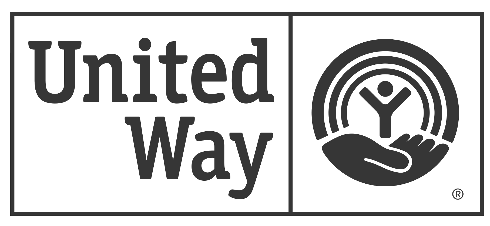
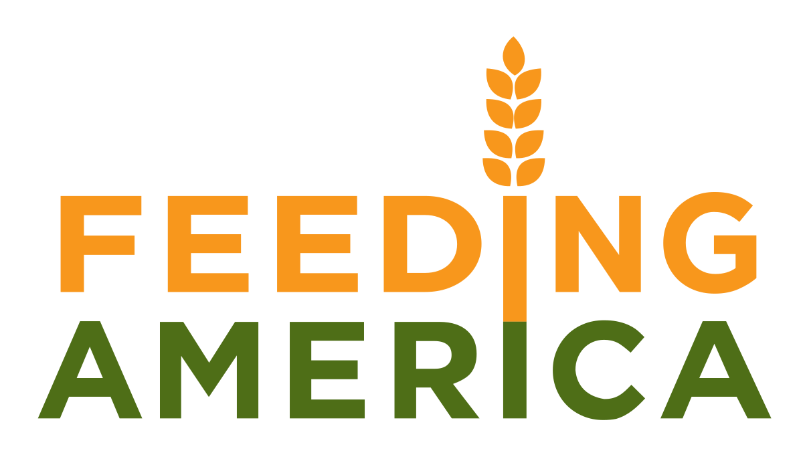
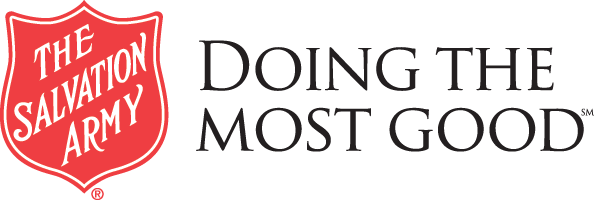
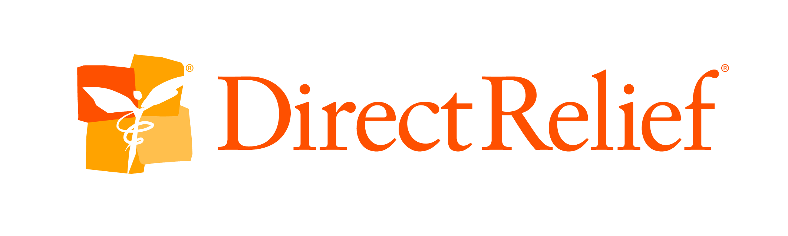
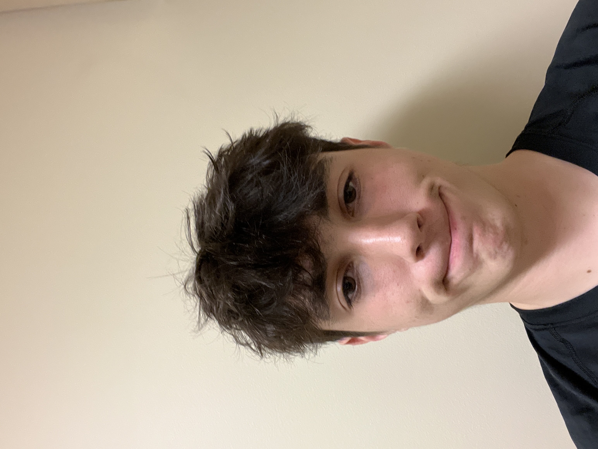

Charity Finder
Charity Finder
United Way is an international network of over 1,800 local nonprofit fundraising affiliate
Rank: 1
Type: Domestic Needs

Feeding America is a United States based nonprofit organization that works with food banks to feed more than 46 million people
Rank: 2
Type: Domestic Needs

The Salvation Army, an international movement, is an evangelical part of the universal Christian Church
Rank: 3
Type: Domestic Needs
St. Jude Childrens Research Hospital works on prevention of children's catastrophic diseases, particularly leukemia and other cancers
Rank: 4
Type: Medical

Direct Relief is a nonprofit humanitarian organization that provides emergency medical assistance and disaster relief in the United States and internationally
Rank: 5
Type: International Needs
Welcome to our charity finder website!
- Think of what category of charity you would like to donate to
- Either use the Top Charities tab or use the Discover tab
- If Top Charities used: search through our chosen top 5 charities then click and explore to find the one that fits your needs
- If Discover Charities used: click the category button that matches what you want and then look through the listed Charites and see what you like
- Finally, click the link on the charity and start donating!
About Us
Our Charity Finder is a search engine similar to google, but specifically for charities! As the internet is complex, we aim to provide all the resources necessary available for our users, allowing them to find the charity they want to donate to. This website was created by three ITWS students at RPI: Sean Morrison, Finn Holohan, and Chris Choi.
